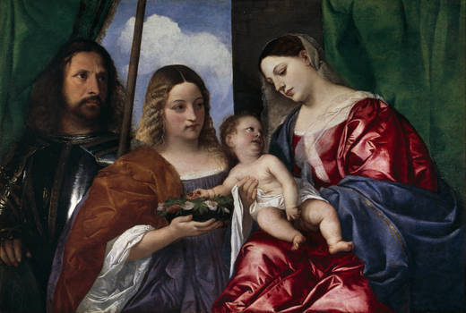
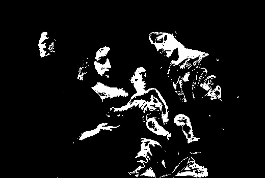
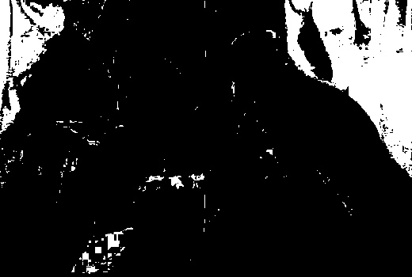
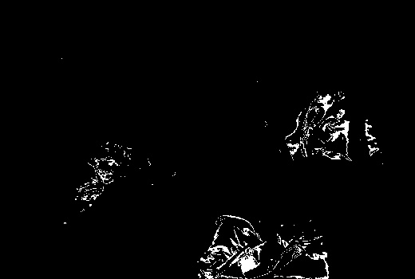
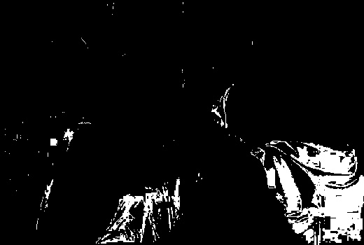
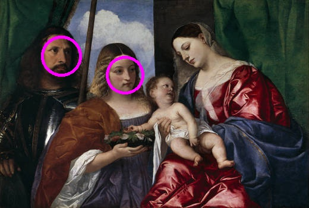

Skye McKay
I will be creating an SVM program in order to date the era of work by Titian my sample data is found from BU History department and i hope to be able to help with labeling un-dated work using this program. I will break the pictures into sample data testing for facial features, overall brightness, use of bright blue and pink since these colors are commonly used in religious works during the time period, use of nudity since greek myth painting often use nude figures, centrality of portraits, amount of people in each painting,facial expressions and overall size of the paintings. I hope that with these and possibly more data I can create an efficient SVM using matlab and c++ to c orrectly label unknown paintings.
This method could be applied to many other forms of art analysis such as being able to identifier an unidentified painter of a some work that's recently discovered. This would be just a building point for that and would require many more samples of different artist works it would also run into problems of similar styles from similar times that would need direct comparison. However being able to differentiate between early and later works of one artist life is more easily done. The way I break the images apart is as follows
SVM classifiers are use usually to create "one vs one" test by training weights for the input attributes known as alphas and a y-intercept known as the bias. They use a neural network created by a Kernel of the training data with expected correlated labels in a vector of equal depth as the matrix of training data. The more examples and the more attributes of value used the better the classifier will work. My classifier is used to distinguish Early era from Middle era, Early era from Late era and Middle era from Late era using a DAG testing tree. I first compare them with the weights for Early vs Middle if the result is positive I continue and test them against Early vs Late returnin Early if the result is still positive and Late if else. If the original result is negative I still test a second time but this time Mid vs Late, positive results being Mid and negative being late. More information on this.
Ferdowsi University of Mashhad, Iran Multi-class SVM MachineThe original image such as this is an early work of Titian. Many of his early works use vibrant colors and are heavily saturated such as this. I also noticed a trend of more biblical or medieval themes in the early works while the later works are often commissioned darker colored portraits or based in Greek Mythology. Middle era paintings are usually combination of both and however are usually darker than early era. This is an Early era painting of the Virgin Mary and a baby Christ.
The altered images are used to find the amount of skin colored pixels, green colored, pink and blue colored and then where all the faces that are readable by opencv facial detection are circled. Before finding These fields I first calculate the average brightness and saturation of each painting which is then used to help distinguish what pixel values would represent the color I'm looking for in a given painting. I also find the amount of people in a painting(not opencv), the amount of nudity they show and the centrality of the picture that person has. These are the 9 attributes I collected from the samples in order to create a matrix for the SVM classifier.
Skin Detection is found similary to the SkinDetect from lab. I calibrate the skin pigmentation to the creamy sometimes yellowy color of all his paintings and also adjust the tones of red and blue to the overall brightness value that I find before checking for skin detection.
After I find the amount of skin I calculate the amount of people in the image by taking vector blobs of the skin data then finding their average size. If the average size is small like less than 200 pixels then anything of that size -50 will be considered a person. If its large such as 300+ I add around 100 to the average size and anything above that is considered a person. While finding the vector blobs of the skin I also find the total amount of skin shown in the image in order to calculate nudity I use the total amount of skin shown and divide it by the amount of people and the size of the painting.
Green pixels
Pink pixels
Blue pixels
Face detection
These are some of the ways I break down the source images into values. I also take into account brightness, saturation, and nudity found by the first image and the skin image in order to catergorize the images as best as possible